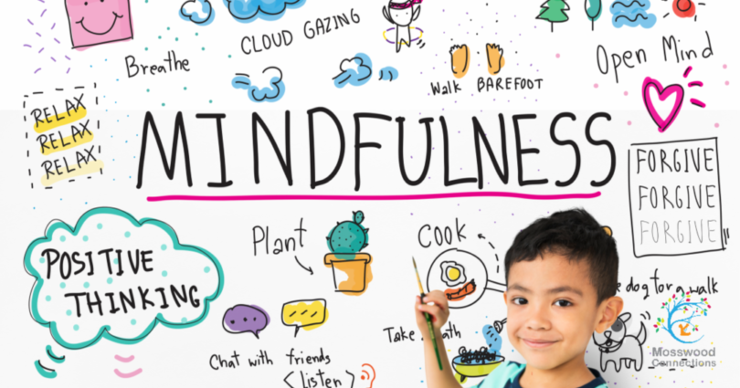

When we teach mindfulness to kids, we equip them with tools to build self-esteem, manage stress, and skillfully approach challenges. Explore our guide on how to introduce mindfulness and meditation to your children—at any age.
These sessions will enable the children not only how to recognise their thoughts, emotions and actions, but also how to react to them in a positive way. It is a time of being calm, quiet and relaxed. We can complete these sessions both in school and at home. It is important that we teach the children strategies to help them deal with stressful situations.